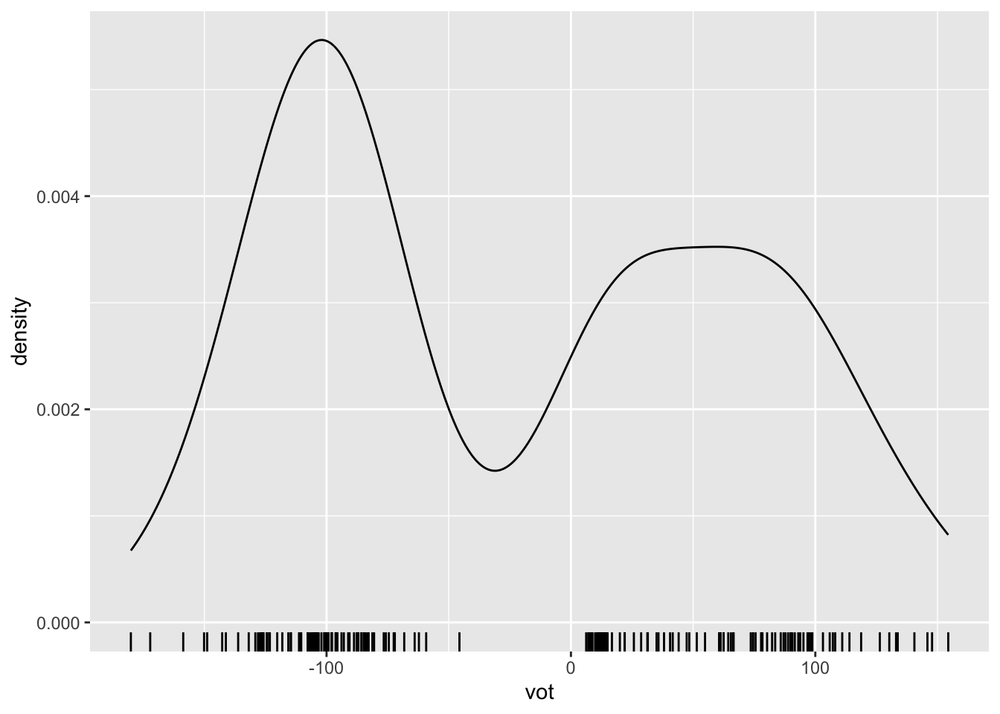

Density plots show the distribution (i.e. the probability density) of the values of a continuous variable.
They are created with geom_density().
Let’s plot the VOT data from alb_vot.
alb_vot <-read_csv("data/coretta2021/alb-vot.csv") |>mutate(# Multiply by 1000 to get ms from svot = (voi_onset - release) *1000 )
Rows: 180 Columns: 6
── Column specification ────────────────────────────────────────────────────────
Delimiter: ","
chr (4): speaker, file, label, consonant
dbl (2): release, voi_onset
ℹ Use `spec()` to retrieve the full column specification for this data.
ℹ Specify the column types or set `show_col_types = FALSE` to quiet this message.
alb_vot
VOT is a numeric continuous variable so density plots are appropriate.
To plot the probability density of a continuous variable, you can use the density geometry. Remember, all geometry functions start with geom_.
Fill in the … in the following code to create a density plot of VOT values in alb_vot.
alb_vot %>%ggplot(aes(x = vot)) + ...
Note that to create a density plot, you only need to specify the x-axis. The y-axis is the probability density, which is automatically calculated (a bit like counts in bar charts, remember?).
This is what the plot should look like.
1.1 Make things cosy with a rug
The density line shows you a smoothed representation of the data distribution over the VOT values, but you might also want to see the raw data.
You can do so by adding the rug geometry. Go ahead and add a rug…
alb_vot %>%ggplot(aes(vot)) +geom_density() + ...
You should get the following:

Nice huh?
Rug
Raw data can be shown with a rug, i.e. ticks on the axes that mark where the data is.
You can add a rug with geom_rug().
Quiz 1
What can you notice about the distribution of VOT values?